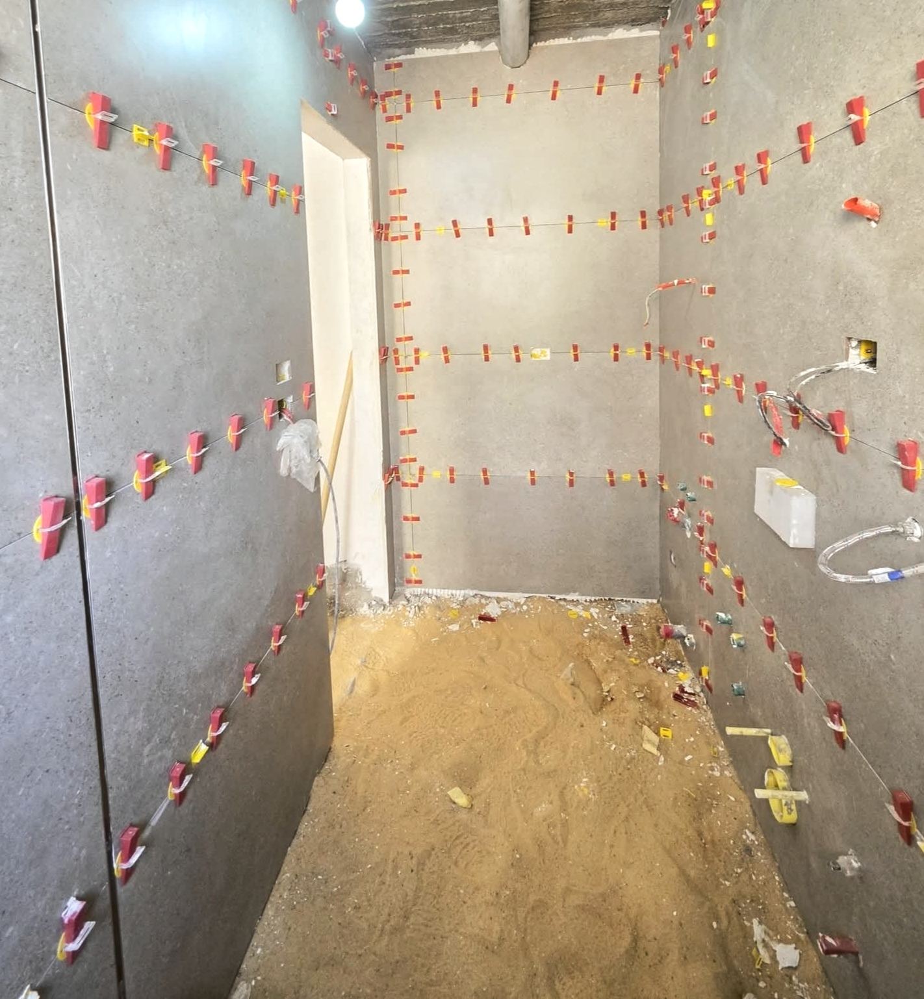
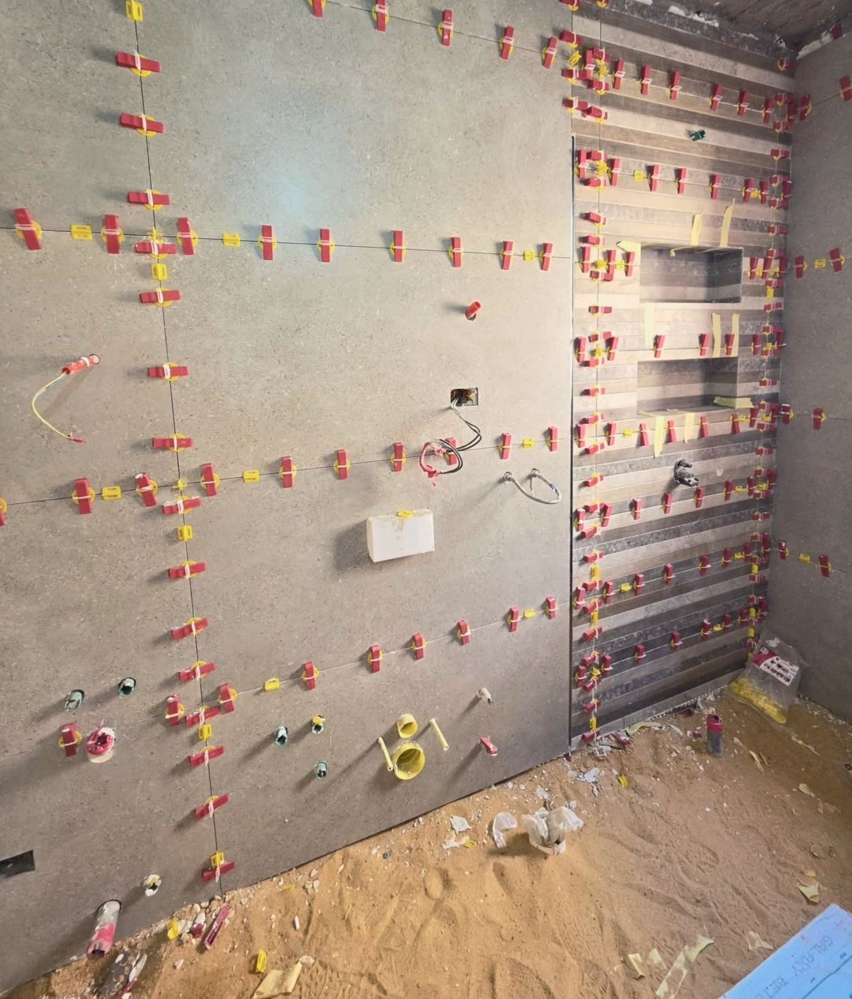

تركيب بورسلين وسيراميك الحوائط والغورنقات بالليزر في جدة بدون تطبيل
تُعد حوائط الحمامات والمطابخ الواجهة الأساسية لفخامة المنزل في جدة، ولكن أي تهاون في ضبط ميزان الجدار أو توزيع الغراء يؤدي إلى ميلان الفواصل أو ظهور فراغات خلف البلاط تسبب سقوطه مستقبلاً. في جوهرة جدة نقدم لك حلاً هندسياً متكاملاً لتركيب حوائط البورسلين والسيراميك وتنفيذ الخورنقات الجدارية بأعلى دقة ممكنة.

أولاً: خطوات التحضير وفحص الجدران قبل التركيب
نجاح تركيب البورسلين على الحوائط يبدأ قبل وضع أول بلاطة، حيث نقوم بتنظيف الجدار وإزالة أي زوائد اسمنتية أو أتربة تمنع التماسك، ثم نفحص استقامة اللياسة باستخدام ميزان الليزر لتحديد نقاط السماكة بدقة، ونختار نوع غراء البورسلين المرن المخصص للأحمال الثقيلة والمقاسات الكبيرة.
ثانياً: تقنيات التركيب الحديثة لمنع التطبيل والسنّية
- فرد الغراء بالمشط ذو الحدين: نوزع الغراء على الجدار وعلى ظهر البلاطة معاً لضمان تغطية كاملة بنسبة 100% ومنع أي جيوب هوائية خلف البلاط.
- الهزاز الميكانيكي وميزان الليزر: نستخدم الهزاز المخصص للبلاط لتفريغ الهواء وضمان ثبات البلاطة مع ضبط خطوط الحلول الأفقية والرأسية بالليزر.
- الكلبسات الأمريكية وصلايب التسوية: نثبت كلبسات الشد بين جميع البلاطات لتوحيد عرض الفواصل ومنع أي بروز أو تفاوت بين حواف البلاط.
ثالثاً: تفاصيل تشطيب الخورنقات (التجاويف الجدارية في الحمامات)
نتميز في جوهرة جدة بتنفيذ الخورنقات (تجاويف الشامبو والديكور داخل الحمامات) بشكل هندسي متقن يشمل قص الزوايا بشطف 45 درجة نظيف أو تركيب زوايا ستانلس مقاومة للصدأ، مع ضبط ميل خفيف جداً في قاعدة الخورنقة لتصريف المياه ومنع تجمعها، بالإضافة إلى قص فتحات الخلاطات والكهرباء بدقة دائرية ومربعة تامة.

هل ترغب في معاينة أو تسعير تركيب حوائط الحمامات والغورنقات في جدة؟
تواصل مباشرة مع الفني صلاح منصور لمعاينة موقعك في أي حي من أحياء جدة:
اتصال مباشر: 0561201914 تواصل عبر واتسابالأخطاء الشائعة في تركيب حوائط الحمامات وكيف نتجنبها
- وضع الغراء بنظام النقط (اللقم): يترك فراغات كبيرة خلف البلاط تجعله عرضة للكسر عند تركيب الاكسسوارات أو السقوط مع الوقت، ونحن نمنعه تماماً بالمشط ذو الحدين.
- إهمال ميل قاعدة الخورنقة: يؤدي إلى تجمع المياه داخل تجويف الشامبو وتغير لون الترويبة، لذلك نضبط ميلها بدقة بالليزر.
- قص فتحات السباكة بشكل عشوائي: يسبب شروخاً في البلاطة أو تشويهاً حول وجه الخلاط، ونحن نستخدم ريش التخريم المخصصة للبورسلين.
مقارنة بين التركيب التقليدي والتركيب الحديث بالليزر
| وجه المقارنة | التركيب التقليدي بالخلطة | التركيب الحديث لدى جوهرة جدة |
|---|---|---|
| التصاق البلاط بالجدار | فراغات هوائية واحتمالية تطبيل وسقوط | التصاق كامل 100% بالمشط ذو الحدين والهزاز |
| استقامة الفواصل والزوايا | اعتماد على النظر واحتمال تفاوت الحواف | استقامة بالملي عبر ميزان الليزر والكلبسات |
| تشطيب الخورنقات | زوايا غير متطابقة وتجمع مياه | شطف 45 درجة دقيق وميل تصريف مدروس |
آراء وتقييمات عملائنا في جدة

الأسئلة الشائعة حول تركيب بورسلين الحوائط والغورنقات
بطاقة تعريف الفني المعتمد
الاسم التجاري: جوهرة جدة لتركيب السيراميك والبورسلين والرخام
الفني المسؤول: صلاح منصور (حاصل على شهادة خبرة مهنية معتمدة من القوات المسلحة المصرية في أعمال البناء والتشطيب والسيراميك خلال الفترة من 1/9/2018 إلى 1/9/2020)
نطاق الخدمة: جميع أحياء جدة فقط | الجوال والواتساب: 0561201914